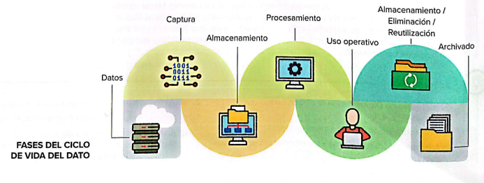

El ciclo de vida de los datos es el conjunto de etapas que los datos atraviesan desde su creación hasta su eliminación o archivado.
El Dashboard es una herramienta de gestión de la información que monitoriza, analiza y muestra de manera visual los indicadores clave de desempeño (KPI), métricas y datos fundamentales para hacer seguimiento del estado de una empresa, un departamento, una campaña o un proceso específico.
El KPI (Key Performance Indicator) o indicador clave de desempeño es una medida de la eficacia y la productividad de las acciones que se llevan a cabo en un negocio.